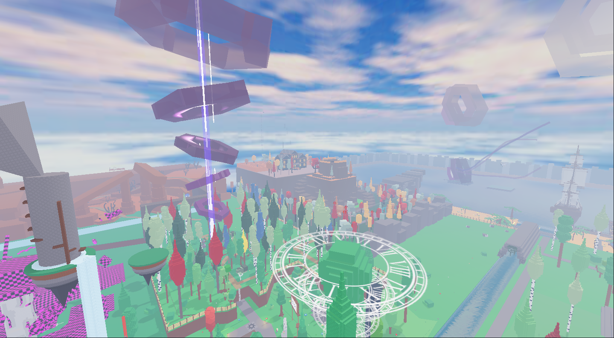
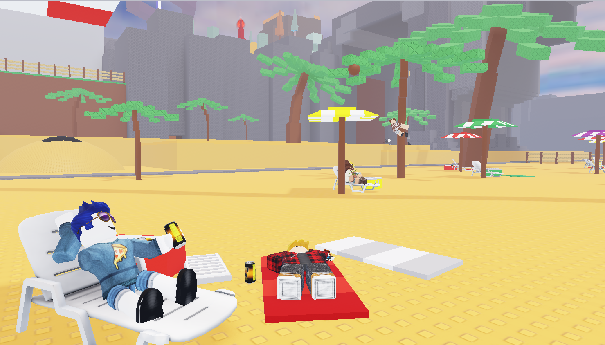
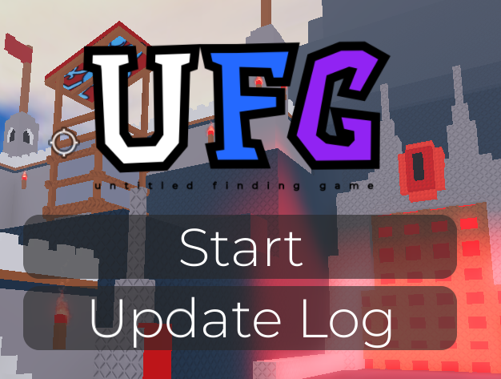
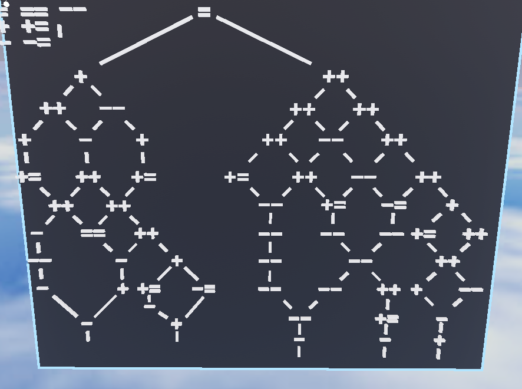
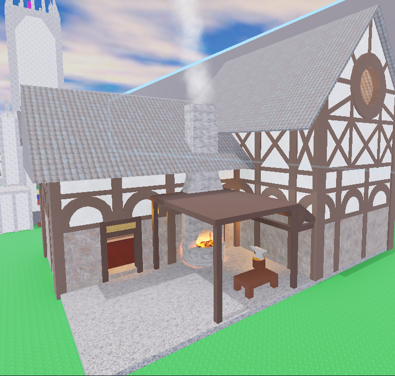
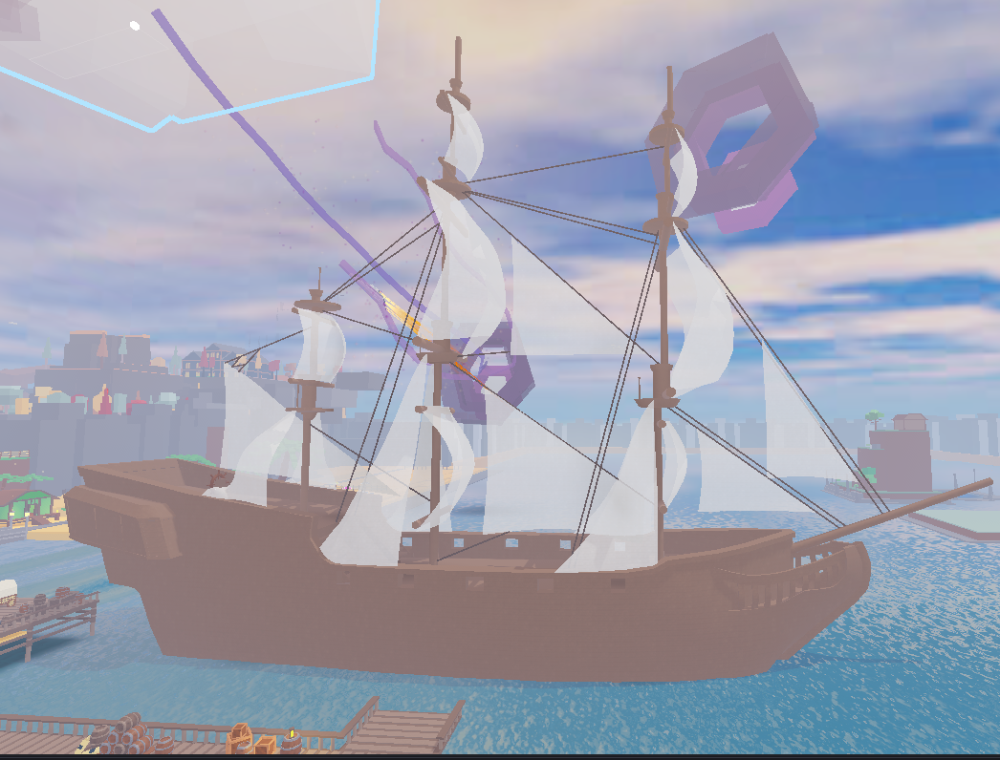
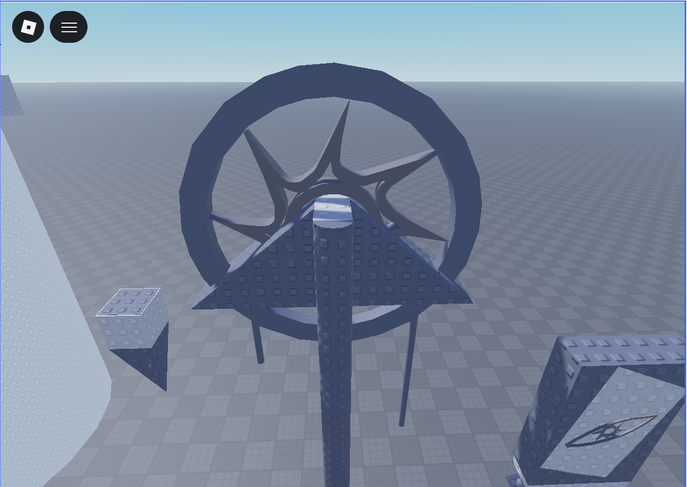

UFG — My Custom Puzzle Game
A large-scale puzzle game featuring parkour mechanics, hidden secrets, and a scavenger hunt aesthetic. Includes original, custom-designed puzzles crafted from scratch with unique solutions.
Description of the game
The game spans 14 distinct areas, 4 sub-areas, and 1 overarching realm, each featuring its own unique theme and atmosphere. Highlights include the Beach, the Haunted Forest, the Town, the River, and the Light.



Custom Puzzles
The featured puzzle combines chess notation, hierarchy, and a grid cipher to create a unique logic challenge
The second puzzle, known as the Equational Cipher, challenges players by embedding deceptive equals symbols throughout the puzzle to disrupt standard decoding logic.

In order to solve the puzzle, you need to understand how each symbol works:
+and++increase the value by +1 and +2, respectively.-and--decrease the value by -1 and -2, respectively.+=and-=take the current saved numbers/connecting points and add or subtract 1.==works differently: draw an imaginary horizontal line across the puzzle. Everything above that line (including results from+=and-=) is added or subtracted, then combined with the saved numbers.
Models/art
Here are some of the custom 3D models and artwork created for the game.


